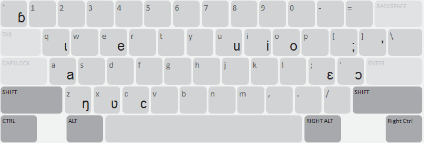
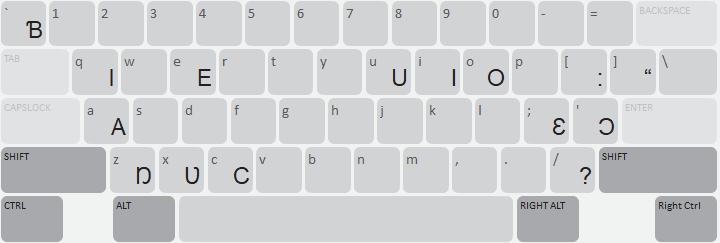
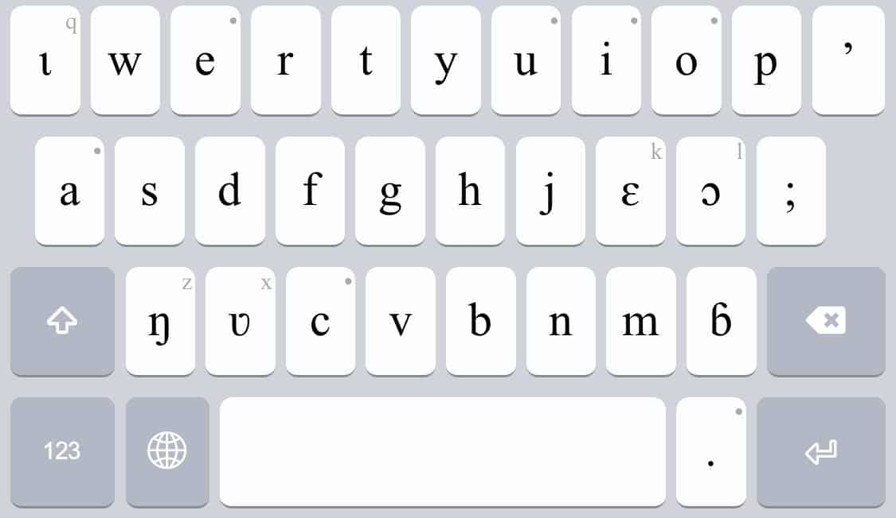
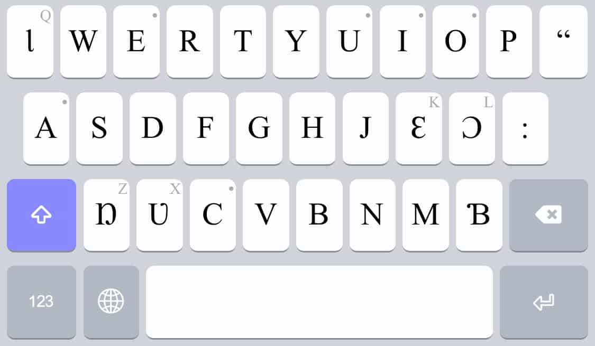
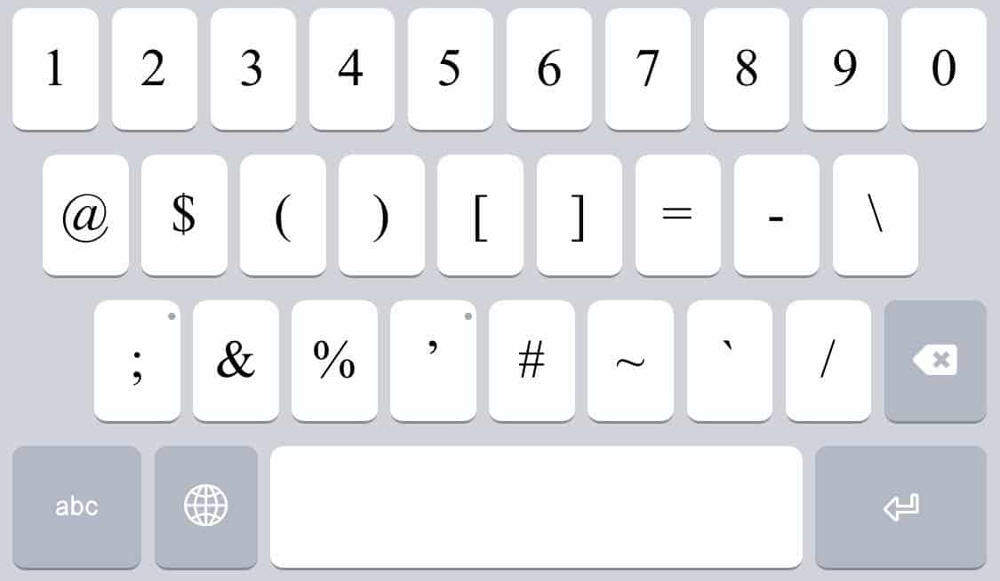
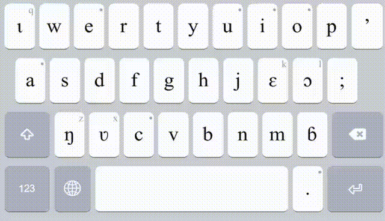
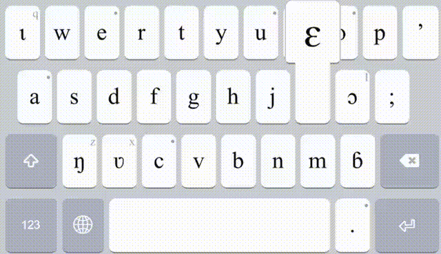

The Komono keyboard is a phonetic keyboard designed for typing the Komono language using a custom set of phonetic characters. It allows users to input Komono text efficiently on both desktop and mobile devices using Keyman.
The layout is based on a phonetic approach, where keys correspond intuitively to Komono sounds while maintaining compatibility with standard Latin input. This enables users familiar with Latin keyboards to learn the layout quickly.
The keyboard supports:
The on-screen keyboard is optimized for clarity and ease of use, displaying the most common Komono characters directly, with additional characters accessible via long-press on mobile devices.
This keyboard is intended for:
It is designed to work across platforms, including desktop and mobile devices, ensuring consistent typing behavior.


Press / then combine it with the following characters:
Note: deadkey / does not produce a slash when typing.
| Acute & Cedilla | ||
|---|---|---|
| First Key | Second Key | Output |
| / | e | é |
| E | É | |
| c | ç | |
| C | Ç | |
| English characters | ||
| / | ||
| x | x | |
| X | X | |
| q | q | |
| Q | Q | |
| z | z | |
| Z | Z | |
| ' | ' | |
| " | " | |
| ; | ; | |
| : | : | |
| ` | ` | |
| ~ | ~ | |
| [ | [ | |
| { | { | |
| ] | ] | |
| } | } | |
| / | / | |
| ? | ? | |
| < | < | |
| > | > | |
| | | | | |
This deadkey only modifies e, E, c, C. All other combinations return the original character.
Press one of these keys, then combine it with a vowel (a, e, i, o, u — uppercase or lowercase):
| Combination Pattern | Result |
|---|---|
| < + vowel | Grave accent (e.g., a → à) |
| > + vowel | Circumflex (e.g., a → â) |
| | + vowel | Diaeresis (e.g., a → ä) |



Access the variants of the letters by holding a key that has a dot at the right corner.

Access the English characters by doing a flick-up motion on a key.
